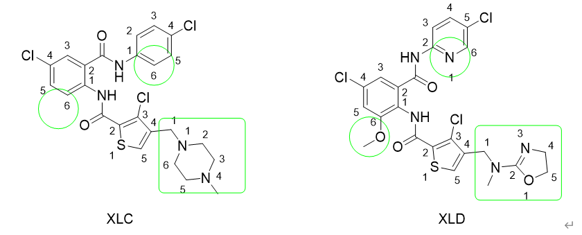

Molecular dynamic package NAMD is one of the most widely used free molecular dynamic software, especially in biochemistry area,it usually use with VMD. NAMD for now can only runs on Linux, VMD can runs on multiple platforms including Windows.
This tutorial is for FEP validation purpose mainly towards NAMD/2.13-mpi, it also provide a chance to test the reliability of webserver Feprepare Feprepare, which is to help users to generate input files for namd. You are expected to have basic knowledge about bash language for simple coding.
In a typical FEP calculation, a 16 or 32 lambda window would be applied. Here we use 16 lambada. The initial structures downloaded from PDB website, Schrodinger Maestro was used to quickly prepare the protein structure, and align the Ligand by its flexible ligand alignment.
We are going to use two protein-ligand structures dowloaded from the Protein Data Bank, namely 1MQ5 and 1MQ6, with ligand XLC and XLD bound.
The aligned XLC and XLD in the binding site of protein target.Step 1: Files set up for LigParGen
Open maestro
File > Get PDB “1MQ5“ Download （the same for 1MQ6） Left click > split > by molecule (the same for 1MQ6) only keep the protein and ligands.
Delete other columns Group > “group selected entries & Groups” > Create Group
File > save project asThere are no H atoms in raw crystal structures, so we need to add H to both the protein and ligands.
Protein preparation > “assign bond orders, add hydrogens, create disulfide bonds. Delete waters beyond 5 angstroms from het group” > Preprocess > problems OK.
(do the same for XLC and XLD ligands) Delete the old structures in time.flexible ligand alignment > common scaffold alignment > use fuzzy matching
file > export , export the protein.pdb, XLC.pdb and XLD.pdb respectively to a folder.
Step2: Files uploaded to LigParGen
Sever LigParGen is a web-based service that provides force field (FF) parameters for organic molecules or ligands, offered by the Jorgensen group.Upload XLC.pdb to LigParGen, > submit > download *.rtf and *.prm for charm/namd
Upload XLD.pdb, do the same thing.Note since the NAMD default charmm force field can recognize all amino acid, there is no need to upload protein.pdb.
Step3 :Upload output files from LigParGen to Feprepare
FeprepareUpload xlc.pdb, xlc.rtf, xlc.prm as reference, upload xld.pdb,xld.rtf,xld.prm as mutant. Upload protein.pdb (1MQ5) as protein.pdb, submit and after minutes, the job should be done. Download the output files as files.zip.
Step4: Transport files.zip to remote cluster
Fep calculation need a lot computatinal resources, you are supposed to have access to some kind of cluster or super computer which instlalled with NAMD/2.13-mpi. Use SSH command or use SFTP tools like FileZilla to transfer to your remote host. Log into your remonte host
$ :mkdir fep
$: mv files.zip fep
$: cd fep
$ unzip files.zip
$: cd complex/
$: ls
There are two branch legs, namely the "complex" and "solvent" branch, we are going to calculate the free energy changee for both of them, now we are in "complex" folder.
Step 5: Modify NAMD configuration file or .namd file.
Now it is time to modify the NAMD configuration file, since there seem incomplete parameters listed by Feprepare Sever. Caution! This part is tricky. Though there are already some configuration file existed in current folder but they are found incomplete or some other tiny errors. Please double check the three following things.
First
more parameter files need to be added to the nvt_equill.namd/npt_equil.namd as well as the md_forward.namd. Here I just copy a whole pack of parameter files originally from Charmm-Gui > Input generator > relative ligand binder. What need to be done is copy the so called “ toppar” file from Charm-gui and put it in /srv/scratch/myfolder. Make sure this path is properly defined in the *namd file.Second
add the ‘updated.prm" as well in the "parameter" list as well, ohterwise there will be an error "XXX.atom unrecognized" happening.Third
Also make sure your “toppar” folder contains this modified “water_ions.mod.str” otherwise another infamous atom type OT not found will find you !!!Note it was found there might be a key mistake from the default *.namd file from Feprepare, that is the default value for "alchfille" was ionzed.fep, but I have found the ionzed.fep B column actually was not defining the -1 and 1 beta for those atoms need to be perturbated, while the ionzed_comple.fep should be the right one. If you want to know more, the Feprpare manual should be read.
Last, remember, you don’t need to set any lambda at this equilibrate stage, set them all to 0.0, 0.0, 0.0 .Step 6: Module load and run the scripts one by one.
The complex leg will need 3 runs, the first beding a NVT, the second beding a NPT with the third beding a NPT production. So is the same as the solvent leg, that is to say, in total we are going to run 6 time, to get the final fep result. It is assumed your remote cluster has NAMD/2.13-mpi installed.
Type the following commands in order, for the purpose of debugg we are going to run the command in an interactive manner. (The following commands only applies under PBS, we used qsub to submit a job request for 32CPUs for 10 hours)$ qsub -I -l select=1；ncpus=32:mem=40gb,walltime=10:00:00
$ cd $PBSS_O_WOKDIR
$ module load intel/18… openmpi/3.1.2-intel namd/2.13-mpi
(you need double check the preconditions for namd/2.13-mpi, it varies)Now the software and it's running box has been loaded, let's begin with the real simulation. note you should change the running steps a relative small number to let the simulation finish in a reasonable time scale. I recommand you just run 500 or 5000 steps for the first time.
$mpirun –oversubscribe -np 4 /apps/namd/2.13-mpi/arch/Linux-x86_64-icc/namd2 +ppn 7 nvt_equil_modifiled.namd > nvt_equil.out.
(If you want to know what"--oversubscribe" does here, read more on Why oversubscribe necessary and for changing it to another argument, potentially read Can I oversubscribe nodes?)
the above command is tricky as well, do the math carefully, we defined the -np as 4, and defined the +ppn as 7, so 4*7=28, each np require an extra CPU for communication so, in total we applied 28+4=32. After finish, three outputs shoule be foundnvt_equil.coor
nvt_equil.vel
nvt_equi.xsc
and they then be put into next run: npt_equil.namd. if you want to know what "--oversubscribe" does, read more on Now run the NPT equilbration$mpirun –oversubscribe -np 4 /apps/namd/2.13-mpi/arch/Linux-x86_64-icc/namd2 +ppn 7 npt_equil.namd > npt_equil.out
It should be ideal if we still keep lambda as triple 0 and do the equilibrium again. after finish, let us run the last production stage.$mpirun –oversubscribe -np 4 /apps/namd/2.13-mpi/arch/Linux-x86_64-icc/namd2 +ppn 7 md_forward1.namd > md_forward1.out
Please note the "Source ../fel.tcl" is turned off, you need to turn it on and change the md_forward_1.mnamd" to "md_forward_all.namd" by adding the runFEP 0.0 1.0 0.0625, since the original .namd is designed for a single lambda window.Step 7: Comparation with the experimental number.
As mentioned above, there are two branch or legs to be calculated: complex and solven The calculated complex is around 46, while solvent is around 50, so the binding free energy difference is around -4 kcal/mol. Since this is a relatively short simulation, the result is expected to be closer to -2.9 kcal/mol when time is extended.
To be summarized, you need to go to “complex” to run the three-step simulation one by one, namely, the nvt_equil_modified.namd, npt_equil.namd and md_forward.namd, which correspond to NVT, NPT and PRODUCTION stages respectively. Then you need to go to “solvent”, do the same procedure as in “complex”. An error has been noticed, which is warning that the original water box is too small and the simulation aborted. In this case, it is recommended you open the npt_equil.namd and increase the “margin” from the default value 1 to 10 and try it again, so is the same for md_forward_1.namd if the same error shows up. During the NVT stage, it is unlikely to show this error.  By finishing this tutorial, the XLC and XLD relative binding free energy obtained as -4 kcal/mol while the experiment value is -2.9 kcal/mol.The next is need to visualize the simulation result in VMD and plot curves to evaluate the quality of the simulation. This will be done in another blog later.